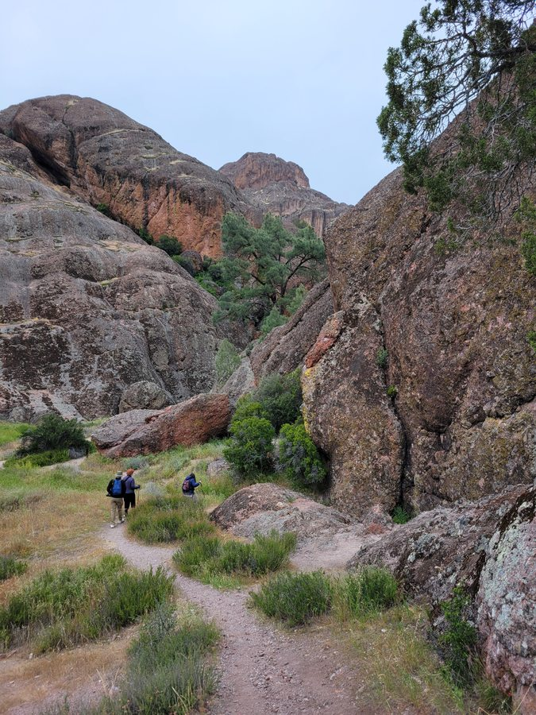
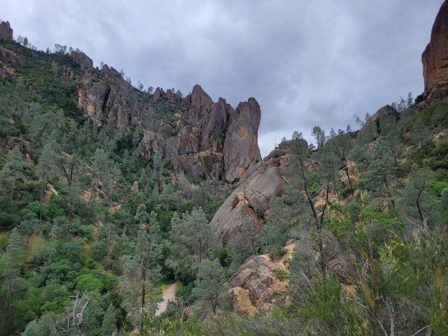

Sunday, April 26, 2026
FQVW+X2 Pinnacles, CA, USA

Spent the afternoon hiking through the rocky corridors and open ridgelines of Pinnacles National Park under a heavy overcast sky, moving between narrow boulder passages and elevated viewpoints of the volcanic landscape.
Highlights:
- Pinnacles National Park — established as a national monument in 1908 and redesignated a national park in 2013; formed from the eroded remnants of an ancient volcano that migrated ~200 miles along the San Andreas Fault and is known for its volcanic breccia spires, talus caves, and California condor habitat.

